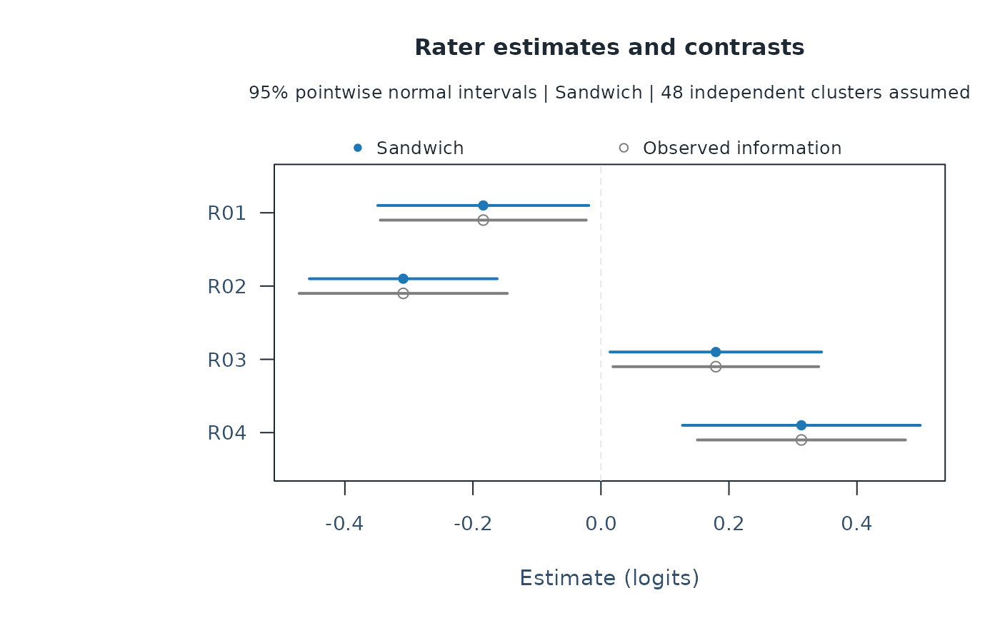

Pointwise intervals for fixed facet estimates and contrasts
Source:R/api-facet-intervals.R
mfrm_facet_intervals.RdDescribe uncertainty about a fixed facet estimate, such as rater severity, or a specified difference between two raters. Start from a supported fitted model; the point estimates stay the same when you change the interval method.
Arguments
- fit
An inference-ready RSM/PCM MML fit from
fit_mfrm(), using a fixed standard-normal person distribution, fixed quadrature and unit observation weights.- facet
A non-person facet, for example
"Rater".- contrasts
Optional numeric matrix with distinct target row names and columns named by every level of
facet. Columns are aligned by name. A row with coefficientsc(1, -1, 0)estimates the first level minus the second. By default, each level is reported.- method
"model"(default) uses ordinary observed information;"sandwich"uses independent-cluster marginal-likelihood scores.- clusters
For sandwich inference, an optional data frame with exactly one row per fitted person and complete
PersonandClusteridentifiers. Without it, persons are the independent units. A larger cluster could be a school or clinic if different schools or clinics are independent. A person cannot be split across clusters. Supply original person labels, even when the input person column has another name.- adjust
Logical; with
method = "sandwich", optionally multiply the covariance byG/(G-1), whereGis the cluster count. DefaultFALSE. This scaling does not guarantee small-sample coverage.- level
Pointwise confidence level, strictly between zero and one.
- x, object
An object returned by
mfrm_facet_intervals().- ...
Unused by print and summary methods.
Value
An mfrm_facet_intervals object with table, selected target
covariance, model_covariance, free-parameter parameter_covariance,
model_parameter_covariance, person_scores, cluster_scores, the
clusters mapping, exact contrasts, settings, and source fit.
The model-based SE and interval remain alongside the selected method.
Score rows are derivatives of a person's marginal log likelihood, not
observed category scores or ability estimates. Scores are absent for
method = "model".
When weak information passes numerical refinement, cautions and
information_review retain the warning and checks. InferenceCaution
also accompanies the interval table when applicable.
Details
Compare ordinary observed-information intervals with a sandwich covariance that treats a person's complete response vector, or an explicitly declared larger cluster, as the independent sampling unit. Estimates are not refitted.
For cluster score s_g and observed negative-log-likelihood
Hessian H, the unadjusted sandwich is
solve(H) %*% sum_g(s_g %*% t(s_g)) %*% solve(H).
Scores aggregate all responses of a person before forming the outer
products; grouping individual rating rows would be a different and
incorrect calculation for this marginal likelihood. The full covariance
is transformed through the fitted constraints and requested contrasts.
Both methods use normal critical values. No automatic method selection,
multiplicity adjustment or significance flag is supplied.
The sandwich requires many independent sampling units and appropriate regularity. It permits dependence within the declared unit but does not establish independence between units. A small number of units can give poor intervals even with nonsingular covariance. If their scores do not span the free-parameter space, sandwich intervals are unavailable; point estimates and the reason remain. Singular/regularized observed information or an ineligible source fit causes an error. Targets fixed by constraints have no inferential interval. Known anchors exclude anchor uncertainty. An ill-conditioned but numerically verified unregularized inverse can be used with a warning. Successful inversion does not establish reliable normal intervals. Review interval width, boundary proximity and quadrature sensitivity; changing to sandwich covariance does not remove this concern.
What robustness means here
Under model misspecification, the sandwich describes sampling variation around the working model's limiting parameter (its pseudo-true target). That target need not equal the generating rater severity or criterion difficulty. Changing the SE does not correct a biased estimate, informative assignment, unmodeled population differences or MNAR nonresponse. Check the model and assignment before interpreting a severity contrast.
These intervals condition on the observed fixed facet levels. They do not generalize to replacement raters sampled from a rater population. They are not multiway crossed-cluster, G/D-study, variance-boundary, EAP or multiple-imputation intervals. Shared random rater/task effects spanning the declared clusters violate this one-way independence assumption. Numerical success is not a general coverage or rater-diagnosis guarantee. Review quadrature sensitivity separately; the helper reuses the fitted grid.
Bounded evaluation
A 1,600-dataset RSM/PCM comparison used 80/320 independent persons, three
fixed raters and two criteria. In its combined skewed-ability/sparse-design
scenario, sandwich coverage of generating contrasts ranged from 87.0 to
95.5 percent despite all intervals being available. Coverage of the
independently calculated working-model targets ranged from 93.0 to 97.5
percent. These are ranges across conditions/contrasts, not uncertainty
bounds or universal operating characteristics. At 200 datasets per
condition, MCSE near 95 percent is about 1.54 percentage points.
See vignette("mfrmr-facet-intervals", package = "mfrmr") for the
design, interpretation and a complete rater-feedback example.
Save, display and report the selected intervals
Use plot(), as_ggplot() and plot_data() to display or extract the
saved result, and apa_table() for tables. Set title = NULL,
subtitle = NULL or caption = NULL in the plot to omit that text.
Attach one result or a named list to mfrm_results(), for example
mfrm_results(fit, intervals = list(raters = intervals), include = c("fit", "plots"), compute = "never").
The route plot(res, type = "facet_raters") shows the selected intervals.
mfrm_report() and export_mfrm_results() retain the method, level,
contrast coefficients, cluster mapping and unavailable outcomes.
The source fit must match; replay reloads the saved results without
refitting or recomputing covariance. These intervals do not replace
uncertainty in ordinary Wright maps, fit diagnostics or Person scores.
References
Zeileis, A. (2006). Object-oriented computation of sandwich estimators. Journal of Statistical Software, 16(9), 1–16. doi:10.18637/jss.v016.i09 . Zeileis, A., Koell, S. and Graham, N. (2020). Various versatile variances: An object-oriented implementation of clustered covariances in R. Journal of Statistical Software, 95(1), 1–36. doi:10.18637/jss.v095.i01 .
Examples
ratings <- load_mfrmr_data("example_core")
fit <- fit_mfrm(ratings, "Person", c("Rater", "Criterion"), "Score")
intervals <- mfrm_facet_intervals(fit, "Rater", method = "sandwich")
summary(intervals)
#> Target Estimate SE Lower Upper ModelSE ModelLower
#> 1 R01 -0.1838153 0.08409258 -0.34863371 -0.01899684 0.08209147 -0.34471159
#> 2 R02 -0.3088478 0.07488878 -0.45562708 -0.16206847 0.08298771 -0.47150069
#> 3 R03 0.1795027 0.08434452 0.01419045 0.34481490 0.08202273 0.01874108
#> 4 R04 0.3131604 0.09478720 0.12738087 0.49893987 0.08294736 0.15058652
#> ModelUpper Status
#> 1 -0.02291895 available
#> 2 -0.14619486 available
#> 3 0.34026428 available
#> 4 0.47573421 available
plot(intervals)
